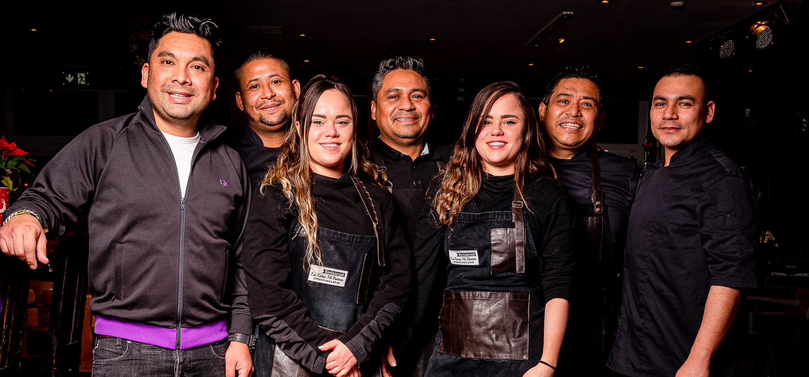

ÜBER
LA ROSA
MI BARRIO

Das Restaurant La Rosa Mi Barrio bietet familieneigene Originalrezepturen Lateinamerikas und war bei seiner Eröffnung 2006 das erste lateinamerikanische Restaurant in Hamburg. Das familiäre Ambiente, herzliche Stimmung und tolle Speisen Lateinamerikas lassen hier einen Abend schnell zu einem lateinamerikanischen Fest werden.